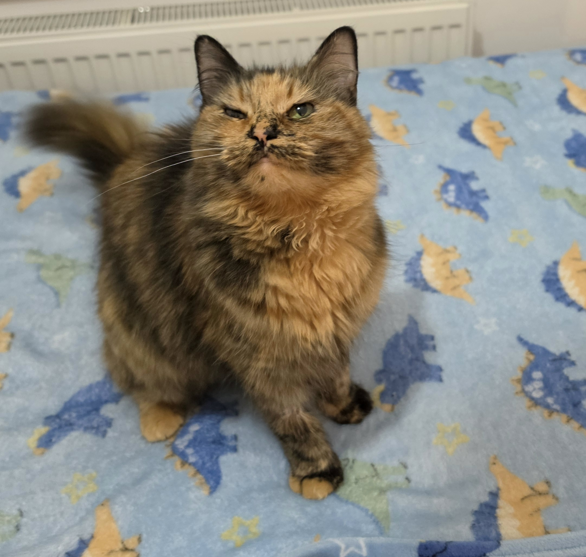
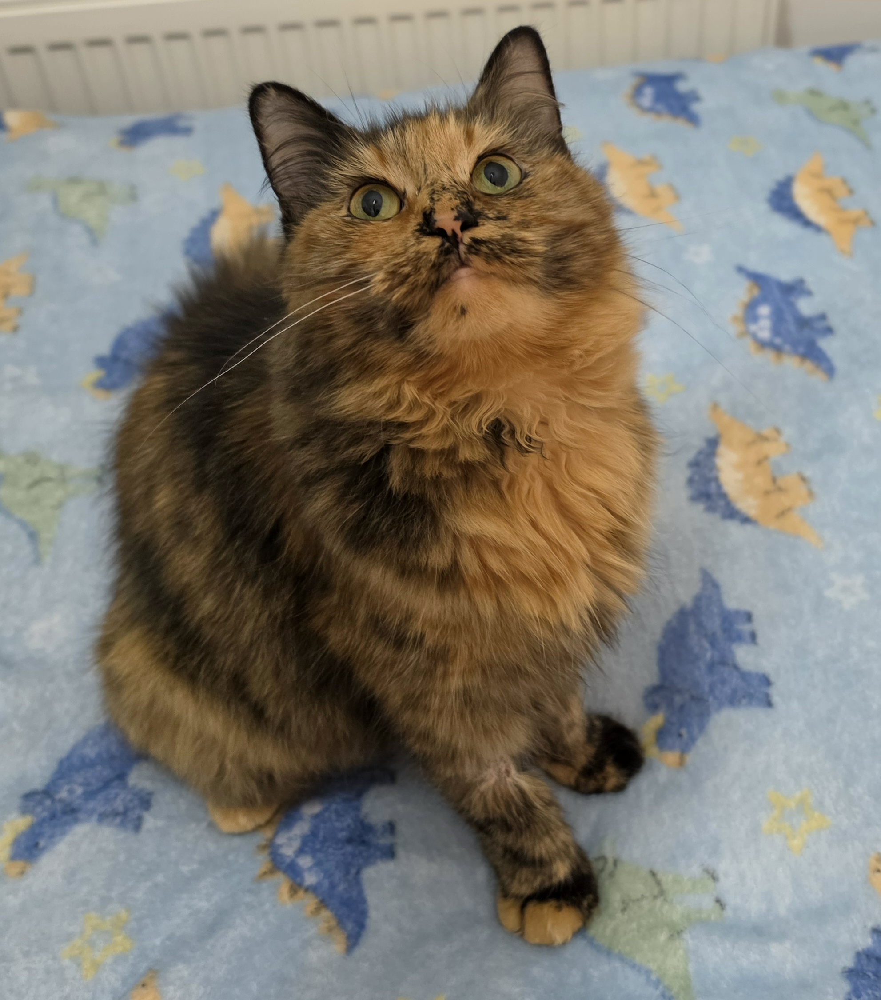
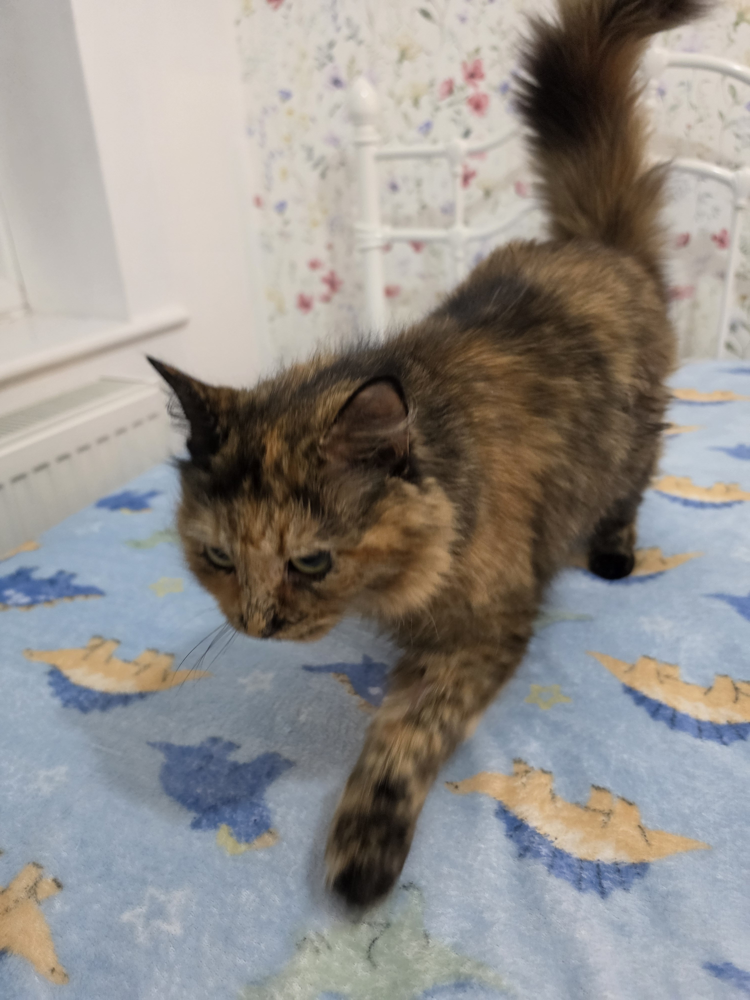

Could Twinkle be your early Christmas miracle? ✨🐾
Meet Twinkle, a stunning two to three year-old gentle, affectionate tortoiseshell girl, with the most gorgeous markings and a heart of pure gold.
We rescued this sweet girl just a week ago after she had been surviving on the streets. During her time outside, we know she raised at least a couple of litters of kittens.
Today marked a huge milestone for her: she has officially been spayed, ensuring her days of having kittens are behind her so she can finally relax and enjoy being pampered herself.
Despite her tough start, Twinkle has the sweetest, most gentle disposition. She is endlessly loving, affectionate, and simply adores human company.
Now that she is safe, warm, and on the mend, our biggest wish is to see her curled up in a loving forever home in time for Christmas.
As well as being spayed, Twinkle has been SNAP tested with negative results, microchipped, had her first vaccination and received flea and worm treatments.
Ideally we are looking to home her as an indoor cat or in a house with a safe garden away from major roads.
If you would like to meet Twinkle and feel that you could offer her the loving home she deserves in time for Christmas, please click on the link below to complete and submit the Cat Adoption Form, or Message Jennie Gorton directly.
Please click here to complete the CAT ADOPTION FORM.
Thank you.



Twinkle